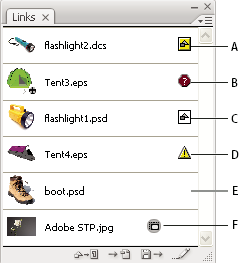

Links panel overview
You use the Links panel to see and manage all linked or embedded artwork. The panel displays a small thumbnail of the artwork and uses icons to indicate artwork’s status.
Note: If you’re working with files from an Adobe Version Cue project,
the Links panel displays additional file information.

Links panel
- A.
- Transparency interaction
- B.
- Missing artwork
- C.
- Embedded artwork
- D.
- Modified artwork
- E.
- Linked artwork
 File status options for the Links panel
File status options for the Links panel
A linked file can appear in the Links panel in any of the following ways:
- Up-to-date
- An up-to-date file displays only the file’s name and (in Adobe® InDesign®) its page in the document.
- Modified
- A modified file is one for which the version of the file on disk is more recent than the version in your document. This would occur, for example, when someone modifies a Photoshop graphic that you have already placed into Illustrator.
- Missing
- A missing file is one for which the graphic is no longer in the location from which it was imported, although it may still exist somewhere. This can happen if someone moves the original file to a different folder or server after it’s been imported into a document. You can’t know whether a missing file is up to date until its original is located. If you print or export a document when this icon is displayed, the file may not print or export at full resolution.
- Embedded
- Embedding the contents of a linked file suspends management operations for that link. If the selected link is currently in an “edit in place” operation, this option is not enabled. Unembedding the file restores management operations to the link.
Work with the Links panel
- To display the panel, choose Window > Links. Each linked file and embedded file is identified by name.
- To select and view a linked graphic, select a link and then click the Go To Link button , or choose Go To Link in the Links panel menu. The display is centered around the selected graphic.
- To purchase a linked Adobe Stock Photo, select the photo and choose Purchase This Image from the Links panel menu. Then follow the prompts in Adobe Bridge.
- To change the size of the thumbnails, in Illustrator select panel Options from the Links panel menu, and select an option for displaying thumbnails; in InDesign choose Small panel Rows from the panel menu.
- To sort links in a different order, choose the desired Sort command in the panel menu.
- (Illustrator only) To hide thumbnails, select panel Options from the Links panel menu, and choose None.